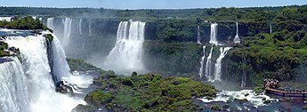

Natureza
Vista da lua crescente através do topo da atmosfera terrestre.
A natureza, em seu sentido mais amplo, é equivalente ao "mundo natural" ou "universo físico". O termo "natureza" faz referência aos fenômenos do mundo físico, e também à vida em geral. Geralmente não inclui os objetos construídos por humanos.
A palavra "natureza" provém da palavra latina natura, que significa "qualidade essencial, disposição inata, o curso das coisas e o próprio universo" Natura é a tradução para o latim da palavra grega physis (φύσις), que em seu significado original fazia referência à forma inata que crescem espontaneamente plantas e animais. O conceito de natureza como um todo — o universo físico — é um conceito mais recente que adquiriu um uso cada vez mais amplo com o desenvolvimento do método científico moderno nos últimos séculos.
Dentro dos diversos usos atuais desta palavra, "natureza" pode fazer referência ao domínio geral de diversos tipos de seres vivos, como plantas e animais, e em alguns casos aos processos associados com objetos inanimados - a forma em que existem os diversos tipos particulares de coisas e suas mudanças espontâneas, assim como o tempo atmosférico, a geologia da Terra e a matéria e energia estes entes possuem. Frequentemente se considera que significa "entorno natural": animais selvagens, rochas, bosques, praias, e em geral todas as coisas que não tenham sido alteradas substancialmente pelo ser humano, ou persistem apesar da intervenção humana. Este conceito mais tradicional das coisas naturais implica uma distinção entre o natural e o artificial, entendido este último como algo feito por uma mente ou uma consciência.
